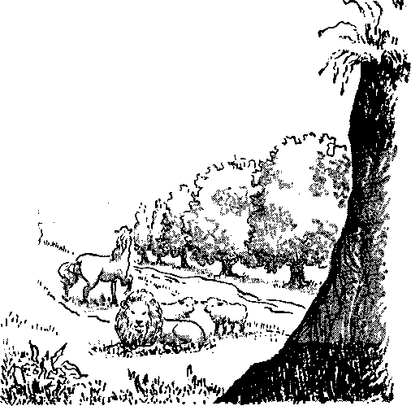

A Paradise Earth Through God’s Kingdom
Does a Worker Have the Right to Work?
Introducing the Fascinating Enzymes
Let’s Go to Market
FEBRUARY 22, 1959
THE MISSION OF THIS JOURNAL
News sources that are able to keep you awake to the vital issues of our times must be unfettered by censorship and selfish interests. "Awake!" has no fetters. It recognizes facts, faces facts, is free to publish facts. It is not bound by political ambitions or obligations; it is unhampered by advertisers whose toes must not be trodden on; it is unprejudiced by traditional creeds. This journal keeps itself free that it may speak freely to you. But It does not abuse its freedom. It maintains integrity to truth. .
"Awakei" uses the regular news channels, but is not dependent on them. Its own correspondents are on all continents, In scores of nations. From the four corners of the earth their uncensored, on-the-scenes reports come to you through these columns. This journal's viewpoint is not narrow, but Is international, it is read in many nations, in many languages, by persons of all ages. Through its pages many fields of knowledge pass in review—government, commerce, religion, history, geography, science, social conditions, natural wonders—why, its coverage is as broad as the earth and as high as the heavens.
“Awake!" pledges itself to righteous principles, to exposing hidden foes and subtle dangers, to championing freedom for all, to comforting mourners and strengthening those disheartened by the failures of a delinquent world, reflecting sure hope for the establishment of a righteous New World.
Get acquainted with "Awake!" Keep awake by reading "Awake!"
ta—Ik—ihi—eii^ne
Published Semimonthly by
WATCHTOWER BIBLE AND TRACT SOCIETY OF NEW YORK, INC. 117 Adame Street Brooklyn 1T N.Y., U.S.A.
N, H, Knobb, Predtfent Ghani Suiter, tfetretary
Printing this issue: 2,850,000 Five cents a copy
“Awakfll” Is ptbflthed in the fol I owing 19 linguagc^: Semimonthly—Afrikaans, Danish, Dutch, Unglhh, Finn' Ish, French, German, Greek, Iulian, Japanese, Norwegian, Portuguese, Spanish, Swedish, Tagalog.
Monthly-^-Clnyauja, ludotityiaL., Ukrainian, Zulu.
' Yearly subacriiitioo rates
Dflfaa for semimonthly editions
AmarlM, U.S., 117 Adams Brooklyn 1, N.Y.
Antral I a. 11 BereaforJ Rd.. Strath field, N.S.W.
Cenada. ISO Bridgeland Ave., Toronto 19, Out- $1 Esilantf, Watch Tower House,
New Zealand, 621 New North Bd., Auckland, S.W. 1
Soith A trice, Private Bag, Elandafotiteln, Tv]. 7/-
Monthly editions cost half the above rates,
flemittances for autecrlpllons Eboujd be sent to W& office In your country, Otherwise send your remittance to Brooklyn. Notice of expiration is sent at least two Issues before subscription expires.
CHANGES OF ADDRESS should reach u& thirty days before yoir modnt date. Give w your old and new addroas (If passible, your old address label). Write Watchtower, 117 Adams Street, Brooklyn lr Naw York. U.S.A.
Entered ax secund-class matter at Brooklyn, N.Y.
Printed In U.S.A.
Tie Bible translation e»d In “Awake!” Is the New World Translation of the Holy Stflpturw. When other translations are used the following symbols will appear behind tfce chations:
AS - American Standard Version AT An American Translation AV - Authorised Version (1611) I?a - J. N. Darby’s version
- Catholic Dottay version ED *- The Emphatic Djaglott JP - Jewish Publication Soc. Le - Isaac Laser's version
JUg — James Moffatt’s version Ro — J, H. Rotherham's version RS — Revised Standard Version Ytf - Hebert Young’s version
CONTENTS
A Paradise Earth Through God’s
Does a Worker Have the Right to Work? 9
Jungle Wasteland Becomes Productive
Introducing the Fascinating Enzymes
“Your Word Is Truth”
The Resurrection—a Proved, Reliable
Jehovah’s Witnesses Preach in All the Earth—Guatemala
DURING the last fiftyeight years man has made phenomenal scientific progress. He has moved from an age of horses and buggies to an age of atomic power, super
sonic planes and roaring rockets. His remarkable progress and intellectual achievements have caused many persons to think that man can stand alone in the universe, that he does not need God. Because they have gained some scientific knowledge they consider themselves to be very wise, too wise to think God is necessary. They are like a small, self-centered child looking at a trick mirror that makes him appear much bigger than he actually is.
This is the attitude, not of a truly wise person, but of one who is senseless. Regarding him the Bible says: “The senseless one has said in his heart: ‘There is no Jehovah.”’ (Ps. 14:1) He closes his eyes to reality and tries to convince himself that God does not exist and that man stands
alone. Because of this denial he finds it very difficult to explain his own existence, as well as everything he sees and studies in the material universe about him.
The scientist Max Planck thoughtfully observed that “we see ourselves governed all through life by a higher power, whose nature we shall never be able to define from the viewpoint of exact science. Yet, no one who thinks can ignore it.” The more knowledge man gains the more evident it should become that man does not and can not stand alone. He must have the guiding hand of his heavenly Father. He needs to hold on to that great Rock just as a child holds on to its father when it is confused and frightened. Because of the ominous threat of atomic war that hangs over this generation man has never been more frightened and confused than he is now.
John B, Medaris, commanding general of the U.S. Army Ordnance Missile Command, pointed out this need for God. He said: “In this grave predicament involving nations determined to remain free, and others determined to enslave them, every element of our civilization has been brought into the battle . . , Man must find a rock on which to lean which offers him solace in time of stress and assurance in time of anxiety. There is a reaching out for God apparent in many regions, a searching for the kind of message Isaiah gave his troubled nation: ‘Even the youths shall faint and be ^eary and the young men shall utterly fall. But they that wait upon the Lord shall renew their strength; they shall mount up with wings as eagles; they shall run and not be weary, and they shall walk and not faint.’ Our first steps into the vacuum of space have re-emphasized the beauty and order of creation, which increased the reverence of men like Copernicus, and have verified the natural laws which govern all existence. As he ponders these things, man must come to believe anew, as once he did before false intellectualism, bigotry and superstition turned him away from truth.”
Man can no more stand alone without the sound counsel and wise guidance of his heavenly Father than can children get along without the help and advice of their parents. Youngsters who are so wise in their own eyes that they disdain the counsel and instruction from good parents are not only a cause of much trouble for others but a cause of sorrow for their parents. Not only that, their actions bring unhappiness and suffering to themselves. God’s Word gives good advice for children and for all mankind when its says: “My son, my law do not forget, and my commandments may your heart observe, because length of days and years of life and peace will be added to you. Trust in Jehovah with all your heart and do not lean upon your own understanding. In all your ways take notice of him, and he himself will make your paths straight. Do not become wise in your own eyes.”—Prov. 3:1, 2, 5-7.
Because mankind has ignored this advice and has acted like self-centered, delinquent children who are wise in their own eyes, it has brought untold suffering upon itself. Man now has reached the point where the knowledge in which he glories threatens to destroy him because he does not know how to use it wisely. If he had
4
followed the good counsel of his heavenly Father, he would not be in this dangerous situation.
The mental attitude of this atomic-age generation is wrong. This was pointed out by Jerome D. Frank, an associate professor of psychiatry. In an article he wrote for The Atlantic, he said: “The nuclear arms race poses a mortal and increasingly pressing danger to civilization. It is obvious that the chief source of peril lies not in the nuclear weapons but in the human beings behind them, and that therefore the danger can only be resolved by changes in human attitudes.”
Instead of thinking so much of itself and being so cocksure that science has all the answers, this generation should humble itself before Jehovah God. It should change its attitude of being wise in its own eyes and acknowledge the wisdom and power of God that is so clearly manifested in the things he has created. If modern man would but obey the command written at Matthew 22:37-39, his scientific knowledge would never endanger his existence. “ ‘You must love Jehovah your God with your whole heart and with your whole soul and with your whole mind.’ . .. ‘You must love your neighbor as yourself? ” This is the right mental attitude.
Man’s only hope for having his affairs straightened out lies in the hands of Jehovah God. He alone is capable of bringing about the many changes necessary for ensuring peace and security for earth’s inhabitants. He has purposed to do this by permanently removing from existence all persons who refuse to transform their thinking, to humble themselves before his authority and to obey his commands.
Man is completely dependent upon God for peace, happiness and for existence itself. No matter what may be said by self-important persons who imagine themselves to be wise, man cannot stand alone.
WHY BAYS BUMAN GQVBRltMBNTS FAILED TO MAKB THIS PLANBT a PARADI bef BOW WILL GOD’S KINGDOM BRING TO PASS TUB WILL or GOD UPON BARfBf

ir A paradise earth had to come at the hands of man, it would never come. Despite promises of paradiselike conditions, human governments not only have failed to bring about such conditions, but often they have brought about the opposite—conditions that belong only to a hideous nightmare. It is as the Bible says: “When the righteous become many, the people rejoice; but when anyone wicked bears rule, the people sigh.”—Prov. 29:2.
fParafae TEarth CJhrougn
Kingdom
Wicked rulers have made people sigh under intolerable conditions because of their policy of rule or ruin. Hitler’s Nazi party was supposed to be the cure for Germany’s economic and political ills. “The National Socialist Reich will endure a thousand years,” Hitler had declared. “Ten thousand,” Himmler insisted. It lasted just twelve years and, in its Collapse, left much of the world devastated and in flames. “It was always understood that Hitler
would remain true to his original ' programme, W eltmaclit Oder xtr-Niedergang,—world-power or nun,” says H. R. Trevor-Roper in The Last Days of Hitler. “If world-power was unattainable, then (it was agreed by all who knew him) he would make the ruin as great as he could.” Indeed, in 1934 Hitler had declared:
“Even if we could not conquer, we
should drag half the world into destruction with us, and'leave no one to triumph over Germany.” And again: “We shall never capitulate, no, never! We may be destroyed, but if we are, we shall drag a world with us,—a world in flames.”
Today mankind is closer to a world in flames than it was during Hitler’s heyday. Now communism would enforce its version of a political and economic paradise on afl, mankind. Nikolai Lenin, founder of the Soviet state, once spoke of “this truly revolutionary struggle of the oppressed class for the creation of a paradise on earth." The tens of thousands of refugees from behind the Iron Curtain have called communism’s “paradise” by a
different name, exposing it for what it is—a
ruthless state under which the people sigh.
Now, instead of a paradise earth, mankind is face to face with a ruined earth.
“Never before," said Bertrand Russell in an open letter to Eisenhower and Khrushchev, “has there been reason to feel that the human race was traveling along a road ending only in a bottomless precipice.” —Look, January 21,1958.
How clear that man, instead of planting a paradise, is "ruining the earth,” just as the Bible foretold. But thank God, the time has come for mankind’s Creator to step in and “bring to ruin those ruining the earth.”—Rev. 11:18.
How will God destroy those who are ruining the earth? How will he make possible a global paradise? How will he make possible a rule of the righteous earth-wide? How will he cause obedient mankind to rejoice under the paradisaic conditions of perfect health and everlasting life? The means by which God will do all this is a kingdom, God’s kingdom.
A Government from Heaven
What is this kingdom that will bring about a paradise earth? It is not a spiritual state of goodness in one’s heart. No, it is a real government, a direct government from heaven. The One whom God has appointed as Head or King of this righteous government is God’s own beloved Son, Christ Jesus. When on earth Christ preached “the kingdom of the heavens” as the hope for mankind.
That this heavenly kingdom is destined to make this earth a beautiful paradise is evident from what Jesus told an evildoer who was impaled alongside him at Calvary. The evildoer had asked Jesus: “Jesus, remember me when you get into your kingdom.” Jesus answered: “Truly I tell you today, You will be with me in Paradise.” —Luke 23:42, 43.
That evildoer did not go to heaven; Jesus himself did not ascend to heaven until forty days after his resurrection. No, that evildoer went to mankind’s common grave and is there yet, awaiting the resurteetion of "the unrighteous.” (Acts 24:15) Jesus could promise this evildoer that he would be raised to paradise conditions because the time for this resurrection is after the wicked rule of nations is destroyed and the earth has been brought to a paradise state, such as that which existed in the paradise or park that God created to the east in Eden’
That original Paradise in Eden shows what mankind’s Creator can do. Adam and Eve, living in their spacious paradise, had everything they needed for a happy life. Moreover, they could have enjoyed their paradise forever. To live forever all they had to do was obey the Creator of their paradise. They chose to disobey. The result was that Adam and Eve lost their paradise. God evicted these rebels from the paradise garden he had planted. Why should rebels enjoy the Paradise of God? So God "drove the man out and posted at the east of the garden of Eden the cherubs and the flaming blade of a sword that was turning itself continually.”—Gen. 3:24.
That original Paradise existed until the global flood of Noah’s day. But no man enjoyed its paradisaic conditions after God drove the first couple from their happy home.
It was not God’s purpose that the earth should permanently lose paradise conditions. Indeed, it had been God’s purpose for Adam and Eve to extend their paradise gradually to the four comers of the earth. Adam could not do this alone nor could he have given-it the proper care each year; so God did not create the original paradise earth-wide. That Adam and Eve, however, were to extend their paradise earth-wide is clear from Jehovah’s command: “Be fruitful and become many and fill the earth and subdue it, and have in subjection the fish of the sea and the flying creatures of the heavens and every living creature that is creeping upon the earth.” —Gen. 1 : 28, 29.
So God did not create the earth for nothing; he created it that it might be the happy home for righteous people. Thus God’s purpose for a global paradise will come to pass and cannot fail: “For this is what Jehovah has said, the Creator of the heavens, He The true God, the Former of the earth and the Maker of it, He the One who firmly established it, who did not create it simply for nothing, who formed it even to be inhabited.”—Isa. 45:18.
God’s Kingdom Comes Against This World
Since no human government can destroy wicked rulers for all time and transform this earth into a paradise, Jesus taught us to pray for this heavenly kingdom: “Our Father in the heavens, let your name be sanctified. Let your kingdom come. Let your will come to pass, as in heaven, also upon earth.” The coming of God’s kingdom against this world does not mean the end of this earth but rather the end of this wicked world.—Matt. 6:9, 10.
So when the prophet Daniel foretold the Kingdom’s coming against this world, he showed that the result would be the smashing of the nations: “In the days of those kings shall the God of heaven set up a kingdom which shall never be destroyed, nor shall the sovereignty thereof be left to another people; but it shall break in pieces and consume all these kingdoms, and it shall stand for ever.”—Dan. 2:44, AS.
The smashing of the nations alone does not ensure a paradise earth. More is needed. The greatest obstacle to a paradise earth is the wicked spirit creature Satan the Devil. Speaking under the guise of a serpent in the garden of Eden, this rebellious spirit creature was instrumental in man’s losing the first paradise. Satan still misleads mankind. With his demonic hordes Satan “is misleading the entire inhabited earth.” No wonder men are “ruining the earth”! No wonder wicked rulers continually appear, causing the people to sigh! No wonder man by himself cannot make this earth a paradise!—Rev. 12:9.
Satan must go. But how? By the Kingdom’s triumphing over Satan and his demon forces. Already the Devil has suffered a humiliating defeat. When was this? After God’s kingdom began operating A.D. 1914.
Many times this magazine has explained how we know that the heavenly kingdom was established A.D. 1914. It has pointed out that the 2,520 years of the times of the Gentiles ended that year, that the world’s time of the end began, that the world happenings and conditions Jesus foretold to mark the Kingdom’s establishment are in evidence.
War in Heaven
Yes, something humiliating happened to Satan the Devil when Jehovah God Installed Christ as King, in fulfillment of the prophecy of Daniel 7:14 (AS): “There was given him [Christ] dominion, and glory, and a kingdom, that all the peoples, nations, and languages should serve him: his dominion is an everlasting dominion, which shall not pass away, and his kingdom that which shall not be destroyed.” After receiving the long-promised Kingdom, Christ the King declared war against Satan. The Bible says: “War broke out in heaven: Michael and his angels battled with the dragon, and the dragon and its angels battled but it did not prevail, neither was a place found for them any longer in heaven. So down the great dragon was hurled, the original serpent, the one called Devil and Satan, who is misleading the entire inhabited earth; he was hurled down to the earth, and his angels were hurled down with him.”—Rev. 12:7-9.
This has meant great trouble for the earth. “Woe for the earth,” says God’s prophetic Word, “because the Devil has come down to you, having great anger, knowing he has a short period of time.” Christ the King did not follow up his victory by then destroying, this evil world. No, he has allowed a “short period of time” for the Devil and his wicked world to remain. During this time, Christ foretold, there would be witnesses who would announce the Kingdom’s establishment: “This good news of the kingdom will be preached in all the inhabited earth for the purpose of a witness to all the nations, and then the accomplished *end will come.” —Rev. 12:12; Matt. 24:14.
After the world-wide preaching of the established heavenly kingdom, the accomplished end arrives. This means the complete end for this world. The nations, including world communism, will be utterly destroyed; for Jehovah God says of his heavenly King: “You will break them [the nations] with an iron scepter, as though a potter’s vessel you will dash them to pieces.” The Kingdom does even more. It puts Satan the Devil and the demons out of the way, for it is written: “The God who gives peace will crush Satan under your feet shortly.”—Ps. 2:9; Rom. 16:20,
Earthly Paradise Under the Kingdom
The survivors of this world’s end will enter a new world. They will begin the work of making the earth a global paradise, under the rule of the heavenly kingdom. Giving us a word picture of the paradise state under the King of God's kingdom, the prophet Isaiah says:
“He must strike the earth with the rod of his mouth, and with the spirit of his lips he will put the wicked one to death. And righteousness must prove to be the belt of his hips, and faithfulness the belt of his loins. And the wolf will actually reside for a while with the male lamb, and with the kid the leopard itself will lie down, and the calf and the gianed young lion and the well-fed animal all together; and a mere little boy will be leader over them. And the cow and the bear themselves will feed; together their young ones will lie down. And even the lion will eat straw just like the bull. And the sucking child will certainly play upon the hole of the cobra; and upon the young one of a poisonous snake will a weaned child actually put his own hand. They will not do any harm or cause any ruin in all my holy mountain; because the . earth will certainly be filled with the knowledge of Jehovah as the waters are covering the very sea.”—Isa. 11:4-9.
Christ will rule as King for a thousand years. His rule will not collapse like Hitler’s "thousand-year Reich,” but it will successfully accomplish its purpose in righteousness. Unlike communism’s “paradise on earth,” God’s kingdom will truly make this earth a beautiful garden, a paradise, and the people will rejoice. Christ will raise from the dead those who are worthy of a resurrection and those who can benefit by one. Among those raised to life under paradise conditions will be the evildoer whom Jesus once promised: “You will be with me in Paradise.”
After the Kingdom accomplishes its purpose, Christ turns the Kingdom over to his Father: “Next, the accomplished end, when he hands over the kingdom to his God and Father, when he has destroyed all government and all authority and power. For he must rule as king until God has put all enemies under his feet. As the last enemy, death is to be destroyed.”—1 Cor. 15:24-26.
All who remain obedient subjects of the Kingdom will be granted the right to live on this earth forever. Let all men of good will rejoice that, not a ruined earth, but a paradise earth is at hand—through God’s kingdom!
T WOULD seem that the right to earn a livelihood would be one of the fundamental guarantees in a free nation. Yet this very question has become a cause for heated argument throughout the United States. In November’s elections it was a predominating issue for six states.
The issue was not whether a person has the right to expect a guarantee of employ-' ment but whether employment can be denied him because he does not belong to a union. Eighteen states have passed laws saying that he cannot be denied employment on those grounds. The Indiana law states: “It is hereby declared to be the public policy of the State of Indiana that membership or non-membership in a labor organization should not be made a condi-. tion to the right to work or to become an employee of or to continue in the employment of any employer.’’
The establishment of more and more union shops has made it increasingly difficult for a worker who does not want to join a union or who has withdrawn from a union
for one reason or another to get a job. or lose their jobs. It was originally re-
For the person who knows only one trade this can mean a denial of an opportunity to earn a livelihood, because he is unable to get work when all shops of his trade are controlled by the union.
The unions see no injustice in this. They feel that if a person wants to work in a certain plant or at a certain trade he should be willing to become a union member. They believe they have greater bargaining power when all the workers in a place are organized in a union. Right-to-work laws are looked upon by them as attemnts to destroy the unions.
What Is a Uriion Shop?
A union shop results from an agreement between a union and an employer that all his employees must be union members. All persons hired by him are compelled, usually after a probationary period, to join the union. If any fail to do this, the employer is obliged to discharge him. He must also discharge any person who fails to maintain union membership by regular payment of dues.
When a union wants to establish a union shop it no longer has to go to the employees and persuade them to vote for it. Instead, it goes directly to the employer and negotiates an agreement with him, sometimes with the threat of picketing his place. If he signs for a union shop, his employees are compelled to become union members quired by the Taft-Hartley Act that an election be held among the employees. If the majority wanted a union shop, the employer was obligated to bow to their wishes. Because the majority of the elections that were held were in favor of the union shop, Congress amended the Taft-Hartley Act in 1951 to eliminate the required elections.
But what if some of the employees in a place do not want a union shop, how can they' prevent it? The law provides for secret voting when 30 percent of the employees request it. Of course, if an insufficient number request it, all the employees suddenly find themselves faced with an ultimatum either to join the union or be fired.
Power for Collective Bargaining.
Unions believe they must have the union shop to strengthen their power for collective bargaining. With power over all the employees in an establishment they feel they are in a better position to force reluctant employers to meet their terms. Right-to-work laws break this monopoly by permitting men to work in a shop without joining the union. The argument presented by the unions is that such laws will weaken the unions in collective bargaining.
If a right-to-work law should cause workers to stop paying their dues to a union because they no longer fear the loss of their jobs, is that not evidence that they do not want the union to represent them? As long as a majority of workers in a plate support the union voluntarily the power of collective bargaining is not destroyed. But if the majority discontinue that support, the union should not expect to continue as their bargaining agent. In a democracy it does not have the right to maintain that position by coercion.
When the majority of the workers in a shop want union representation, the union insists that the minority who are against it shduld be forced to join and help support the union financially. Since the union is required by law to act as. the bargaining agent for all the employees, it sees no reason why nonunion members should benefit from its efforts when not supporting it.
The union considers riders.”
Opposers of compulsory unionism, however, contend that this is not a sound reason for taking a man’s job from him or for denying him one in the first place. They point to the several organizations in a community from which many people receive benefits yet that few actually support financially. Because a political party is put in power by a majority vote, that does not mean the minority should be compelled to join that party and help finance its political campaigns. Neither does it mean that all opposing parties should be silenced and crushed out of existence.
Freedom to choose or to reject a political party or a religion is recognized as essential in a free society. Compulsory support for either would mean the end of freedom. Since this is true in politics and religion, should it not be equally true in labor? Rule by the majority should mean the preservation of minority rights and minority opposition.
Since an employer cannot hire a nonunion man at a lower wage than that paid to union workers, because the law requires the union to represent the nonunion workers as well as the union workers, why should the union fear for its existence? Such an arrangement protects both and was requested by the unions for nonunion shops. Even though there are nonunion men in a shop, as long as the union has the majority backing it up it has the necessary power to force a reluctant employer to an agreement. The nonunion men are bound by the union’s trade agreement and are subject to employer discipline to keep it. An employer can fire them more easily than he can a union man.
Means of Control
Advocates of right-to-work laws believe they are a means by which union members can control their leaders. When the leaders of a union become corrupt and act in a highhanded manner, the workers could, because of such laws, withdraw from the union without losing their jobs. They could not be compelled to continue giving financial support to a bad union operated by labor racketeers.
When a union has gained monopolistic powers its leaders can exercise an economic power over union members that prevents protest against corruption. The McClellan committee has revealed that frequently union members are powerless to remove corrupt leaders. If elections are held they can be so arranged as not to express the will of the majority. The person who protests may lose his job or land in a hospital.
When questioned about this, Senator McClellan stated: “Take a truck driver, a fellow employed in a plant. Now, he gives them some trouble in the union—he asks questions, and he challenges this or that. The labor boss goes down to that plant and says, ‘Listen, if you keep this man working for you, you are going to have trouble.’ Management maybe doesn’t want to get rid of him, but what alternative have they? They go out next morning and they find their trucks have syrup in the engines, or some other vandalism. They have no choice. You take the Carpenters Union, a construction union. You give them trouble—they won’t assign you to a job.”
In Philadelphia a member of the Teamsters Union opposed the local leadership. He was attacked by goons and was struck on the head with a hammer. A member of the Teamsters Union in Nashville, Tennessee, testified in a case that involved the Teamsters Union. He was beaten so badly by an assailant that he remained unconscious for ten days.
McClellan’s investigating committee has uncovered many instances of violence by Union goons. By means of such violence workers and employers have been intimidated by union officials. Of course, not all unions have become dominated by racketeers.
Nevertheless, proponents of right-to-work bills believe that workers would be able to exercise a restraint on their leaders if they were free to pull away their support from the union without losing their jobs. Labor authority Donald Richberg said: “The most effective voice which any man can have in an organization, unless he is a part of the ruling hierarchy, is the voice of opposition, the voice of criticism. This may be a small voice, but one which can be made effective only if iy is coupled with the power to withdraw from the organization, to refuse to give it moral and financial support.'. . . The major value of labor organizations to the workers lies in their power to control their representatives.”
Voluntary Unionism
Voluntary unionism is much more suited to a free culture than compulsory unionism. When a union has members that have joined voluntarily it is bound to be a healthier union than when many of its members have been coerced into joining against their will. When the union does not have a monopoly on jobs, union leaders must win the loyalty of the members and hold that loyalty by the service they give them and by proper management of union affairs.
It is argued that right-to-work laws would require the union to fight constantly for its life. But how is this a bad thing? Is it not desirable in a competitive society? Is not competition the very basis of the Western economic system?
Once a union gains monopolistic power it can easily become oppressive. Instead of being a servant of the workers it becomes their master. Justice Brandeis once pointed out that “the ideal condition for a union is to be strong ana stable, ana yet to naye in the trade outside its own ranks an appreciable number of men who are nonunionists. Such a nucleus of unorganized labor will check oppression by the unions as the unions check oppression by the employer.”
Not all union men oppose right-to-work laws. A local-union president of the Locomotive Engineers declared: “I believe in unionism. I joined the union soon after getting a job at age 19.1 became an officer of the local union in 1949 and have been working for unionism ever since—but, unionism has gotten out of hand. We want good unions, voluntary unions, in place of the ‘union shop’ and ‘goonionism’.” A member of the UAW said: “I favor this right-to-work bill because it will give the union back to its membership.” Still another union man stated: “I have been a union member all my railroad life, but compulsory unionism must go if we are to remain a free people.” Others refrain from expressing themselves for fear of union reprisals. They are afraid of losing their livelihood.
There are, of course, many voices that are raised in favor of compulsory unionism and against right-to-work laws. Joseph Beirne, vice-president of AFL-CIO, stated: "The so-called right-to-work laws strike at the very heart of the labor movement.” That would appear to be at its membership and dues money.
The majority of those persons who voted on the issue last November expressed preference for compulsory unionism rather than the freedom of being able to choose for themselves whether to join a union or not to join. Five out of six states voted against right-to-work laws. But that still leaves a total of nineteen states that have voted in favor of them. There can be little doubt that labor unions will make a concerted effort, with the great political power mey nave aeveiopea, to cause tnese jaws to be repealed.
Unions Have Helped Workers
During the past few decades unions have done much to help the worker and to improve his standard of living. Before the advent of unions many employers compelled their workers to labor under frightful working conditions for starvation wages. They gave the workers no security or just treatment. It was only by the workers’ organizing into unions and then forcing the hand of the employers through strikes and threats of strikes that they were able to improve working conditions.
If it were not for unions many employers today would quickly revert to their old way of mistreating employees. There is no doubt that unions have done much good. But in the fight to combat employer despotism there is always the danger of going to the other extreme of union despotism. This danger becomes more acute as unions grow in size as well as in financial and political power. When racketeers manage to gain control of a powerful union, the union ceases to be a benefit to its members. It becomes a despotic master that preys upon the workers and menaces the nation.
It is because of ’the awful, monopolistic power that many unions have acquired and the danger inherent in such power that right-to-work laws have been introduced in various state legislatures. By adopting such laws a state can-1 guarantee workers the freedom to pull out from a bad union if they so choose without fear of losing their jobs. That freedom would help keep unions under the control of their members and out of the hands of racketeers.
Whether a worker has the right to work or not depends entirely upon laws that guarantee him freedom of choice without fear of reprisals. Surely such freedom is not out of place in a democracy.
WASTELAND
'' r
C7HE inverted-mango-shaped island of Ceylon, lying at the
By
" A w o ke I* ’ correspondent
apex of India, is a small country and little known to the rest of the world. But in relation to its size of about 25,300 square miles and the population of about nine million, it has big problems, even as have the other newly independent countries of south and southeast Asia. Stated in a nutshell, the chief problem is “the task of nation building.” The most vital aspect of this task is economic development. This development has the twofold purpose of (1) diversifying and strengthening a weak and dependent economy that places the welfare of the country and its people on the fluctuating fortunes of tea, rubber and coconut; and (2) increasing agricultural and industrial production to raise the standard of living of the people.
Nature has bestowed on this beautiful tropical island vast potentialities that yet remain to be utilized. Her numerous rivers, with their sources in the central hills and flowing to the sea across plateaus in the east, north, north-central and west of Ceylon, constitute perhaps the largest development potential. Since Ceylon became independent eleven years ago the country has embarked on a program of harnessing rivers and developing their basins for agriculture and industry. The Gal Oya Valley scheme, modeled on the Tennessee Valley scheme in the United States of America and the Damodar Valley scheme in India,
Ceylon

was the first such effort, and constitutes the largest single national development project in Ceylon. The principal object of the
scheme is “to establish within the Area of Authority the maximum number of families of Ceylon citizens that the area can carry at a reasonable standard of good and comfortable living conditions, and generally to promote agricultural and industrial development, and the ecqnomic and cultural progress of these citizens.” The “Area of Authority” referred to is about one thousand square miles.
Historically, this scheme for transforming arid lands into fertile fields stands apart from the procession of time, and yet it is something that Ceylon has taken from her past. The damming of rivers for irrigation purposes is as old as her two-thousand-year-old history. In and around the capitals of ancient Ceylon large irrigation reservoirs stand to this day as monuments to the engineering skill of her ancients. It is also something new because, for the first time in the history of the country, with flood control and irrigation for agriculture, power is being generated for rural electrification and industry.
Work on this scheme commenced in 1949 and to date a little over one half has been completed. Over 120,000 acres of jungle lands have been reclaimed and transformed into forty new villages. Each village consists of 150 families and is complete with schools, dispensaries, community centers and multipurpose co-operatives. The other uses to which land has been put are agriculture (mainly rice cultivation), research stations, nurseries, pasture reserve and village forests. The giant reservoir called the “Senanayake Samudra” and a network of smaller detention reservoirs, integrated in an over-all irrigation system, have been constructed. The main dam is 3,600 feet long, with a top width of thirty feet A tarmacadam road, twenty feet wide, runs on the top of the dam and at night it is illuminated by powerful electric lights at 160-foot intervals. The height of the dam above the rock foundation is 150 feet. A steel-lined concrete conduit thirteen feet in diameter, is laid under the main dam as the reservoir outlet for power and irrigation water. It was also used for diversion of the river during construction of the river closure. All together, irrigation is now assured to about 80,000 acres of rice fields, both old and new, for two crops in the year. Cigarette tobacco, groundnuts and cotton are other drops under a rotated system of farming. Still other crops are in the process of experimentation in the nurseries and in the field.
Industrial Development
Power extension work is being carried on, with assistance under the Colombo Plan Technical Aid program. The work, which is not yet complete, already consists of about 120 miles of high-voltage transmission Ipies, thirty miles of local distribution lines and twenty-four substations to carry power throughout the valley and the adjacent areas. The powerhouse is situated on the northern end of the earthen dam below the reservoir and right under the shadow of the giant rock known as Ingi-niyagala. It is designed to generate 10,000 kilowatts of power when all four turbines are installed and working. At present only two, with an output of 2,500 kilowatts capacity each, have been installed.
The industries so far operated with the power consist of the sawmill and darpentry workshops that handle the entire development requirements on the scheme, the brick and tile factory, with an annual production potentiality of three million tiles or bricks, and able to meet the entire development and commercial requirements of eastern Ceylon, and a large rice mill capable of hulling the entire paddy produced in the Gal Oya Valley. In addition, numerous rural, towns have been provided with electricity for domestic and lighting purposes, and the machines in the various workshops, foundries; repair and reconstruction shops on the project are power operated. Work is about to commence for the extension of the power lines to the paper factory at Valaichenai, twenty-five miles from where power lines have already been constructed.
The largest industrial project envisaged in the valley is the sugar industry. The work on a sugar-cane plantation of 10,500 acres and the construction of a factory have already commenced. The industry is scheduled to go into production in May, 1959, and when peak production is reached in the next two years, 30,000 tons of plantation sugar, about 20 percent of the country’s annual consumption, will be manufactured.
Inhabited by 100,000 People
With the development going apace for the past eight years, this area in the back-woods of eastern Ceylon has today become an integral part of her agricultural areas. It carries a population of about 100,000 people, of whom about 75,000 are those who have gone there during the past eight years. About 50,000 of them are peasant landless farmers who have been settled at state-provided farmsteads, complete with a house, three acres of irrigable land and areas ranging from one half to two acres of high land. They have been drawn from all parts of the country and work each farmstead as a family unit. Agricultural extension work is carried out among them to help them to get better returns from the land. An estimated 10,000 others in the area are those who have gone there to settle in commercial enterprises to provide the needed amenities to the new settlers. Another 15,000 are the employees of the Gal Oya Development Board, the autonomous body responsible for the integrated development of this river basin, and their families. The bal
ance of 25,000 are people who lived in the ancient villages scattered throughout this once-desolate region and who eked out a precarious existence either by cultivating pulses and grains or by cultivating rice, dependent entirely on monsoonal rains. They now have irrigation for their land, better communications, educational and medical facilities and the benefits of commerce and trade.
IN THE NEXT ISSUE
* Why is it that man alone of all earth's creatures needs a divine guide? There are five good reasons given in the article “Man’s Unique Need of a Divine Guide." Read it in the next issue.
B What do you know about China’s communes? How do they function? What do they offer the people? Why are not Communists In other countries enthusiastic about them? You wilt want to read the article "Red China Regiments the Masses."
• You were probably born on a bed and will spend about a third of your life on one. So you should enjoy reading the article "Thank God for My Good Bed!”
The Gai Oya Valley scheme is undoubtedly the forerunner to other river valley development schemes. Already, investigations are in the final stages for the Walawe river basin development, and work has been started to plan to reclaim the Maha-veli river basin. They will be larger and more fruitful to the country than Gal Oya.
The wealth of knowledge and experience gained in the Gal Oya scheme will be channeled into the new enterprises that will mark the effort of a newly independent people in their march of progress.
All men of good will are happy to see sueh efforts at beautifying parts of God’s earth and at bringing more comfortable living conditions to their fellow man. It gives some small idea, too, of the great earth-wide reconstruction program now near at hand when all wastelands will be beautified and become inhabitable, when “the desert plain will be joyful and blossom as the saffron." (Isa. 35:1) May that blessed time soon come, to the honor of Almighty God and to the eternal benefit of mankind.
'jj According to the Department of Agriculture there is no single light that will repel all insects. A report in the D.S. News <S> World Report of July 4, 1958, said:
“Different colors attract different types of bugs. Pure white draws certain types of moths and beetles. Blue and bhie-white bvlbs attract the largest rmraber of insects, yellow is less attractive, red seems to be least visible. Mosquitoes are not partial to any color.”
Introducing the
ASK the average person what he knows about enzymes and most likely his answer will be, “Nothing,” or “Never heard of them.” Yet he has heard and knows something about the closely related vitamins, hormones and genes. Though they afe truly fascinating, as we shall see, for some reason or other they have failed to catch the imagination of the public. The fact that they are not generally sold over the drug counter, as are vitamins and hormones, might explain it except that genes also cannot be thus commercialized and yet are well known.
Though so little known, the fascinating enzymes are called “the most important of the body’s proteins,” and have been aptly described as “life’s miracle chemicals.” Authorities tell us that “they are at the heart of every chemical action in the body" and “that life without them is impossible.” “Every chemical action” includes digestion, metabolism, fermentation, putrefaction and even locomotion—yes, all bodily movements involve enzyme activity.
Cows eat the same fodder day after day, yet neither their milk nor their flesh has any resemblance to fodder in appearance or in taste. Why? Because of the enzymes. One man’s flesh and blood cannot
be distinguished from another’s even though the one may subsist chiefly on cereals, another on fruits and still another on meats and blubber. Why? Because of the fascinating enzymes.
Modern man is proud of his combustion engines, but note the characteristics of the Creator’s human engine. According to latest reports, mnrp than Qa_pAi-pont nf t|lA atomsJthat make up our organism are replaced in the, course of a year. It is as though just any kind of combustible material were used in an auto engine and it was able not only to run the auto but also to keep repairing all its various parts, whether of steel, aluminum, copper, wood, cloth or rubber, so that no part of the auto at any time was more than one year old. What accounts for this remarkable engine’s being able to utilize an infinite variety of materials, by which it not only produces energy but also keeps on renewing itself? The fascinating enzymes!
Learning A bout Enzymes
“All we know is still infinitely less than all that still remains unknown.” Those words of William Harvey, modern discoverer of the circulation of blood, and uttered more than three centuries ago, certainly apply as regards man’s knowledge of eh-zymes.
Like vitamins, hormones and genes, enzymes are potencies “infinitesimal amounts of which bring about those chemical reactions upon which all life depends.” Between these there is a remarkable degree of co-operation. Thus “vitamins are required in the manufacture of many enzymes, and hormpnes serve to regulate the activity of the lenzymes.” There is also strong evidence that a single gene controls the making of a single enzyme so that enzyme deficiencies may be transmitted from one generation to another, resulting in mental and physical abnormalities. Enzymes are also greatly dependent upon trace minerals for proper functioning.
The term enzyme comes from the Greek language and literally means “in ferment.” Familiar examples of fermentation or enzyme activity are sour milk, cheese, beer, wine, sauerkraut and pickles. It is generally agreed that enzymes are protein particles. Protein is one of the three'organic constituents of all animal life; the other two are fats and carbohydrates, the latter including starches and sugars. The term "protein” comes from a Greek root meaning “first,” and protein is indeed the most important of the three. Its molecules also are both the largest and the most complex. Enzymes are a certain kind of protein, even as are muscle, bone, hormones and the skin.
Efforts on the part of scientists to solve the riddle of fermentation go back some three centuries. Not much progress was made, however, until about a century ago when Pasteur laid the groundwork by his discovery of the law of biogenesis, saying that all life came from precedent life. On the basis of his experiments he concluded that all fermentation was caused by tiny living cells.
Although for the practical purpose of aiding the wine industry of France Pasteur’s theory served well, it was not the whole or exact truth. Coming doser to it was the German chemist Buchner, who, in 1897, was able to demonstrate that fermentation did not depend upon living cells but upon an active liquid that he had been able to detract from yeast cells. Thirty years more passed before the first enzyme was isolated, the American biochemist Sumner of Cornell accomplishing this in 1926, He thereby proved the protein nature of enzymes. Since then some seventy enzymes have been obtained in a pure form.
Function as Catalysts
Enzymes perform their work by a process known as.catalysis and they are therefore described as catalysts. “A catalyst,” we are informed, “is an agent which affects the velocity of a chemical reaction without appearing in the final products of the reaction.” To use a simple illustration: The adding of cement to a mixture of sand, crushed stone and water causes a change to take place, but the cement is not a catalyst because it appears in the final product; besides, the change is mechanical, merely from nonsolid to solid, not a chemical one. But today cottonseed oil and other edible oils are hardened for commercial use with the aid of hydrogen gas. However, hydrogen does not chemically react with these oils by itself but will do so in the presence of. some silch mineral as nickel. The fine particles of nickel cause a chemical change to take place, and yet there is no nickel in the hydrogenated fats that the housewife buys. The nickel is a catalyst. So also with the enzymes of our body;
they are catalysts, because in very small amounts they accomplish great chemical changes without at all appearing in the end result.
Just how efficient the enzymes are as catalysts can be seen by comparing their activity with that of the chemist. To dissolve protein the chemist must boil it for twenty-four hours in a very strong acid solution. But enzymes dissolve proteins in but four hours, at body temperature and in a far milder solution. Likewise the soapmaker requires great heat and strong acids to hydrolyze or emulsify fats, whereas enzymes are able to do this at body temperature and in a practically neutral solution.
Piickles
But even more remarkable is the contrast in the result of the enzymes as compared with those of, the chemist. When the chemist breaks down protein molecules he wrecks them. But enzymes only dissolve some of the bonds of the molecules, resulting in submolecules or amino acids that the body is able to utilize as a builder uses bricks. The difference between the two might be further illustrated thus: The chemist is like the savage brute that uses a sledge hammer to reduce a powerful ten-ton truck to a pile of useless junk. On the other hand, enzyme activity might be likened to the work of auto mechanics who skillfully dismantle such a truck and reuse all its parts.
As to the effectiveness of these enzymes: Crude ptyalin can digest 200,000 times its weight in starch; invertase can convert a million times its own weight of sucrose into invert sugar; and one gram of pure renin can coagulate ten million grams of milk.
Specificity
Another fascinating feature of enzymes is what is known as their specificity; far from acting indiscriminately, they are very choosy. Certain ones act on certain subjects, the substance on which they act being termed the enzyme’s substrate. Illustrative of this is the digestive process.
Of the three basic types of food, proteins, carbohydrates and fats, -the enzyme ptyalin in the saliva digests only the carbohydrates, changing them to glucose. The pepsin of the stomach affects only the proteins, changing them to amino acids with the aid of hydrochloric acid. The enzyme lipase in the small intestine affects only the fats, hydrolyzing or emulsifying them. In the small intestine the digestion of-carbohydrates is completed as well as that of the proteins, the latter with the aid of still another enzyme, trypsin.
However, the foregoing is a gross oversimplification. For one thing it takes far more than three or four enzymes to digest all proteins, fats and carbohydrates. Many enzymes insist on just the right molecular structure before becoming active. Thus lactose and maltose, though of very similar structure, both being sugars, each require a different enzyme. This peculiarity has resulted in developing the lock and key theory, in which the enzymes are likened to keys that fit only certain substrates or locks. Then again, some enzymes seem like passkeys, fitting a number of different locks. .
There is also considerable support for the theory that only certain parts of the surface of enzyme molecules are active, known as “hot spots.” According to this theory everything depends upon just how the enzyme molecule lands upon the substrate as to whether it fits the substrate and will act upon it or not. How large these “hot spots” are can be imagined from the fact that in a single tiny cell of the human body there may be 100,000 enzyme molecules, these accounting for one to two thousand different kinds of chemical actions within the cell!
Enzyme Systems
To become active all enzymes need either oxygen or moisture. Then again, certain enzymes require a complement or coenzyme in order to work. Nor may we conclude that it takes only one enzyme to effect a certain chemical change. While each kind of enzyme regulates a specific chemical action, enzymes act mostly in groups or systems, of which some one thousand have been identified thus far.
Thus, because of being unable to tolerate galactose, one of the components of milk sugar, certain infants could not digest milk. It was found that a chain of four enzymes is needed to digest galactose and that one of these was missing. By supplying just this one the problem was solved. In this regard it is of interest to note that mother’s milk is better for an infant than cow’s milk, not only because of its richer mineral content but also because it contains from four to five times as mantf enzymes, making mother’s milk much easier for an infant to digest.
Along this line it is said that “the processes that change malt and hops to beer, and those that provide energy for an Olympic sprinter have fourteen steps—and eleven of the fourteen are exactly alike for the two processes.” Also, the fermentation of sugar yielding alcohol “directly involves at least twelve enzymes—and it took hundreds of research workers from more than a dozen countries to unravel nature’s secret for [thus] altering glucose.” Similarly, for the breaking down of fats, not just one but nine enzymes are required.
Other Fascinating Aspects
Enzymes dissolve the dead and worn-out cells, making it possible for the blood to carry them away. A certain enzyme accounts for the clotting of blood. Itching, it has been found, is caused by enzymes breaking down protein particles in the body. Then again, a certain enzyme is indispensable to conception; without it the male sperm could not pierce the ovum. Apparently one sperm does not have enough of this enzyme, which accounts for the fact that many sperms must be on hand for conception to take place. We are also told that each nerve impulse produces a substance that an enzyme must decompose before another impulse can be transmitted. Nerve gas causes paralysis by inhibiting this enzyme.
Enzymes are being used more and more commercially. In the United States millions of pounds of citric acid are produced annually from sugar and molds containing enzymes, taking the place of lemon juice. Enzymes are used in preparing flax fibers, in curing tobacco, in tanning leather, and are more and more taking the place of malt in baking. It is reported that 20 percent of Japan’s national income is from industrial enzymology.
Perhaps the most fascinating of all is the role enzymes play in modern medicine. Application of a certain enzyme to swollen bruises restores the tissues to normalcy in but a fraction of the time previously required. Likewise, “an enzyme . . . now speeds the treatment of burned skin, one of mankind’s most painful and dangerous injuries. Named ficin, the enzyme literally dissolves away the damaged tissue and can completely clean a third-degree wound in three to five days.” This greatly expedites skin grafting, which may be urgent in such cases.
Enzymes have also proved very valuable in dissolving pus in the lungs as well as in clearing up other forms of congestion. In certain cases of serious heart disease there is often the question of whether the lungs or the heart has been damaged. Damaged heart muscle releases a certain enzyme into the blood, making it possible to identify at once the organ involved and what course to take. Further, discovery that certain mental cases are caused by genetically transmitted enzyme deficiencies has enabled physicians either to supply the lack or to compensate by a restricted diet, thereby restoring such persons to mental health. This may yet prove to be one of the most amazing and far-reaching of all medical discoveries involving enzymes.
While the foregoing has but lightly scratched the surface of what is known about enzymes, it does show that they truly are fascinating potencies deserving to be at least as well known as their close relatives, the vitamins, hormones and genes. We have noted that they He at the heart of every chemical action of the body: digestion, metabolism, fermentation, putrefaction and locomotion. So small that 100,000 of them may be found in a single cell, they are such powerful catalysts that they can cause chemical changes at ratios as high as one part to ten million. Fantastically specific as many of them are, they are also marvels of .co-operation, as noted by the some thousand enzyme systems. As The Encyclopedia Americana puts it:
“The part played by enzymes in the»bod-ily processes of animals and man is so varied and complex that whole libraries in the fields of biochemistry and medicine are devoted to it, . . , The whole field of enzymes and their relationships with other potencies, such as vitamins, hormones, genes and viruses, is not only fascinating but of supreme interest in commerce, agriculture, public health, and many other phases of human life and activity.”
Now for some practical observations. Arguing for less refined foods or use of dietary supplements is the fact that enzymes need both vitamins and trace minerals to do their work. Thorough chewing of food is also indicated so as to let the enzymes do their work efficiently. And when we note that fats are digested only in the small intestine we can understand why Dr. Sara Jordan of the world-famous Lahey Clinic, Boston, and one of the leading gastroenterologists (stomach specialists) of the United States, urges that we abolish the frying pan and the deep-fat kettle. And is there not implicit in the facts regarding digestion a powerful argument for moderation and simplicity: that we don’t eat too much, nor too fast? Surely!
And last but not least, the fact that the Creator has given us such a marvelous organism should increase in us the sense of responsibility to use it properly and cause us to how in wonder, humility and gratitude before our all-loving, all-wise and allpowerful Creator!
It has been said that the average dream lasts only about thirty seconds, though it may seem to go on all night. Apparently this is not true of most dreams, according to experiments conducted by Nathaniel Kleitman, a noted University of Chicago student of sleep- Seven men and two women were involved In the experiments. When they went to sleep the subjects wore electrodes, making it possible fdr,the experimenters to measure the sleepers’ brain waves. Several times during a night the subjects would be awakened and asked if they had been dreaming. When they were, it was found that their brain waves had a peculiar pattern, one different from that registered by dreamless sleep. Thus it was possible to measure the length of dreams. Briefly, this is what the experiments revealed, as reported by Scientific American of October, 1957: “The dreams of their subjects averaged about 20minutes in length. The shortest was three minutes, the longest 50. Dreams tend to be longer toward morning. , . . Dreams are not fleeting but have about the same pace as waking experiences.”
veV* «° to
SHOPPING for the family dinner table is no longer done exclusively by the housewife. More and more husbands are finding it to be a unique pleasure. In New York city approximately 40 percent of the shoppers are men. Many of them get great delight from strolling among the immense displays of common and uncommon foods found in the modern supermarket and stopping now and then to examine the oddities.
This phenomenon appears to be due to the fabulous change that has come over American food markets in the last twenty years or so, especially since World War II. In most towns and cities, going to market no longer means going to small, dingy stores where a meager selection of merchandise is kept behind counters out of the customer’s reach. Neither does it mean buying products in bulk that are scooped out of big barrels. Nor does it mean purchasing items whose prices are not marked on their containers. All this has changed.

The modern method for merchandising food is to take the market out of the country-store system and put it in pleasing surroundings and operate it with smooth efficiency. The modern supermarket is generally a beautifully designed building with a vast parking area. Its floor space may cover as much as 35,000 square feet. This is a tremendous area for a market, but there are a few that exceed even this colossal size.
When the shopper approaches its doors electric eyes open them automatically. The interior is striking. The color of the ceiling and walls is restful to the eyes, the lights are soft and there may be relaxing background music. Air conditioning maintains a comfortable temperature throughout the building. The aisles are wide and the many rows of shelves are kept loaded with neat stacks of goods in amazing variety. It is not uncommon for a supermarket to handle six thousand items.

There are several long rows of refrigerated cases for meats, dairy products and frozen foods. Meats are prepackaged and sealed in plastic. In some stores there are one hundred and sixty feet of such cases. Their enticing contents make it difficult for a shopper to pass by without stopping and putting a few items in his shopping cart.
There is no haggling over prices, as is so often necessary in many markets of the world. Prices are fixed and clearly marked on every piece of merchandise. The food the shopper chooses is paid for at one of many checkout stands.
Self-Service
One of the biggest factors contributing to the success of supermarkets has been self-service. By permitting shoppers to walk among well-stocked shelves and to pick out what they want the store is able to handle a greater volume of people and to sell more merchandise per customer than by the old system. As the shoppers walk down long rows of easily reached foods that are arranged in an eye-catching manner they are influenced to buy more than they had intended. It has been found that the shopper in a supermarket buys seven items for every three he had on his shopping list.
Self-service is the only system that could handle the large crowds that shop at supermarkets. It is best for the store and the shopper. As he walks about the market he is free to deliberate over his choice of items. He can compare brands, prices and sizes without being pressured by a salesman.
A large metal shopping cart is provided by the store for the customer’s convenience. It is essential in the self-service system. If there were no carts a shopper would buy no more than the few items he could carry in his arms. The commodious cart is an encouragement to buy a larger number of items. After payment has been made the cart can be pushed out to the shopper’s car. It is left on the parking lot to be picked up later by a market employee.
Some carts are designed with a seat for small children. This leaves mother’s or father’s hands free to examine and to select merchandise. Market operators usually place candies and cookies on shelves that can be easily reached by these children as they are wheeled by. There is always, a good possibility that what they pick up will not always be put back by their parents. This clever placement of goods helps to increase sales.
Cheaper Food
A shopper can obtain food in a supermarket at a much lower price than he would have to pay in a small store. This is to his advantage. The market can sell at low prices and reap only a small profit per item because of its volume of business. While a small store is selling to only a few hundred persons a week, the supermarket is selling to thousands. A very large market may draw as many as 50,000 people on Saturdays. A big turnover of merchandise vat low prices earns more money for the store than a small turnover at high prices. It is this big volume of sales that makes possible the construction of markets costing from a quarter of a million dollars to one million and more.
These large markets, and especially a chain of them, have vast purchasing power. They;buy in such immense quantities they can bypass middlemen and make purchases directly from manufacturers and farmers. Direct buying means savings for them and better prices for household shoppers.
The nonfood items sold in supermarkets help to compensate for the low profits the stores get on groceries. They bring much higher profit margins. The nonfood sections carry a wide variety of items. In some markets shoppers can buy garden supplies, drugs, cosmetics, dinnerware, kitchenware, toys, bicycles, radios, TV sets and many other things a person would not expect to find in a food market. Going to market today can mean going to what almost amounts to a general merchandise store.
Produce Distribution
The produce section of a supermarket is an attractive and impressive sight. But few persons realize what a great risk a market takes by handling produce. If the produce fails to move as fast as the market’s operators had estimated, there is a loss of money through spoilage. Approximately one hundred kinds of fruits and vegetables pass through the produce department of a supermarket on a seasonal basis. This leaves room for much waste. It has been estimated that in the distribution of leafy and yellow vegetables from farmer to consumer there is a waste of about 43 percent.
In a large city such as New York the produce is generally obtained from a central market where it is received from the farmers. In other places big supermarkets may buy directly from farmers and fruit growers. A market that cannot risk buying large quantities of produce will make its purchases every morning from a jobber. He is a speculator who takes the risk of buying in large quantities from the receivers in the hope of disposing of the produce in smaller quantities to retailers.
The jobber in New York city begins work around midnight. During the hours that follow he is scurrying from one receiver to another, haggling over prices and making purchases. When he has the amount of produce he feels he can dispose of he is prepared to sell to market and restaurant buyers when they arrive. He will set his prices sufficiently high so that he will reap a good profit. The buyers, of course, will dicker with him until a price satisfactory to both is reached.
Fruits are obtained in New York by means of auction. The site of the auction is a big warehouse located on a pier near the central produce market. As you enter the warehouse you are immediately struck by the many long rows of fruit crates that are stacked to a height of about five feet. Here and there a crate has been opened to expose its contents for examination by buyers. Upstairs are a number of auction rooms about the size of small schoolrooms. The auctioneer stands on a platform at the far end of the room with a desk in front of him that resembles the type used by judges in police courts. He is flanked by assistants who record the sales.
The auctioneer chants prices in a monotone through a public-address system that is turned up to ear-shattering volume. To the visitor his chanting is a blast of unintelligible sound. Yet the buyers seem to understand what he says. They generally stand at the rear of the room, ignoring the many theater-type seats provided for them. A slight motion of a hand conveys their bids to the sharp-eyed auctioneer. After a buyer has purchased what he wants, he rushes to the next auction room and begins bidding there. What a market buyer pays for fruits here determines the prices his market sells them at to the shopper.
Markets in Other Countries
In many countries merchandising of food has changed little in hundreds of years. When a housewife goes to market she must either go to many small shops or to an open-air market. The merchants in the open market squat beside small piles of produce and other goods that they offer for sale. A stranger will find this to be a colorful and fascinating place.
Open-air markets generally sell a variety of merchandise. In the large market in Kano, Nigeria, the shopper walks among piles of grain, salt and spices. He passes freshly slaughtered meat, dried fish, as well as leather goods, metal jewelry, empty bottles, old razor blades and any number of other items that are offered for sale. Approximately 20,000 people come to this market daily. If the housewife wants to buy some meat she must go to the butcher. Since he generally lacks the convenience of refrigeration, he must kill the animal on the spot and sell the meat that very day. Unless the housewife times it right she will not be able to get the cut of meat she wants but will have to buy whatever the butcher is working on when she arrives. She buys only enough for that day.
In most cases the merchants do not have a fixed price. The shoppers are expected to haggle with them. For persons who are accustomed to this sliding price system it is enjoyable. They like to walk away from a heated round with a merchant feeling that they got a bargain. It is a personal victory for them.
In many places household shoppers buy their fish from fish markets that are operated by fishermen’s wives. In Copenhagen the women display eels and other fishes on top of crates that are set up on the street next to the docks.
In Lisbon, Portugal, the iisnermen's wives peddle their fish up and down the city’s streets. The fish are carried on their heads in trays. That is also where their shoes are kept. These women prefer to go barefooted, but a city ordinance requires them to wear shoes. As long as a policeman is not in sight they keep the shoes with the fish.
There is an open-air market in the small town of Alkmaar in the Netherlands that sells nothing but cheese. The market is held every Friday, beginning early in summer and continuing through fall. After buyers have examined the displays* of cannonball-shaped cheeses the dickering begins. Here is how The National Geographic Magazine describes it: “As buyer and seller name a price, they strike each other’s palms so emphatically that echoes of slapping resound across the cobbled square. A final handclasp seals each transaction.” Since the cheese sold here is in large quantities, the household shopper must buy what she needs from a retailer.
Although these old-style methods of marketing are colorful and traditionally accepted by the people, more and more countries are beginning to adopt the supermarket system. It has begun to function in some forty-six nations.
Since marketing is customarily a woman’s chore, the interest shown in it by many American men may seem strange to the people of other countries. Nevertheless, the modern supermarket with its striking architecture, vast size, pleasant music, immense’stock of foodstuffs in great variety and low prices is a pleasant and interesting attraction for men as well as women. It is small wonder, therefore, that more and more American husbands are ready and willing when the wife says, “Let’s go to market.”
The Resurrection—a Proved, Reliable Doctrine
«Z"\NLY one out of five’* of the top-(_/ ranking scientists in the United States believes Jesus Christ was resurrected from the dead, according to a recent survey. Wilbur M. Smith, a professor of English Bible at Fuller Theological Institute is reported to have said that the most surprising aspect of this ^^vey "is the acknowledged lack of faith ... on the part of scientists who claim membership in some Protestant evangelical . denomination.” “In view of the extreme liberal views of many congregationalists,” Smith declared, “and the infiltration of modernism in the Methodist Church, the majority of denials from men in these denominations was no surprise. But it was somewhat astonishing to find as many Episcopalians denying the resurrection as professing to believe it, and more Baptists and Presbyterians rejecting it than affirming it.”
Another survey, this one conducted by the statisticians of George Gallup, revealed that 90 percent of those questioned in the United States and 71 percent of those questioned in Britain believed that Christ was the son of God, but belief in Christ’s resurrection was not so strong. Only 74 percent in the United States believed. Jesus was raised from the dead, and only some 54 percent in Britain.
These surveys show that there is considerable doubt about the doctrine of the resurrection. In the words of Paul: “If, indeed, there is no resurrection of the dead, neither has Christ been raised up. But if Christ has not been raised up, our preaching is certainly in vain, and your faith is in vain . . ., you are yet in your sins. In fact, also, those who fell asleep in death in union with Christ perished. If in this life only we have hoped in Christ, we are of all men most to be pitied.” But what proof have we that Christ was raised from the dead? How can we prove that the resurrection doctrine is not the hallucination and imagining of griebstricken men? —1 Cor. 15:13-19.
Disbelievers in the resurrection accuse the disciples of Jesus of either intentionally or unconsciously inventing the story of the resurrection. But if this were the case, why was it necessary to induce, yes, almost force them to believe in the resurrection themselves? How stubbornly had Jesus’ disciples doubted his return to life! When the women hurried to tell them that the tomb was empty and that the Master lived, the disciples accused them of nonsense. When, later on, Jesus appeared to many in Galilee, Matthew says, “some doubted.” And when Jesus appeared in the room where the disciples were met together, there were those who would not trust their own eyes, but hesitated until they had seen him eat. Thomas ^till continued to doubt until Jesus had allowed him to, touch his flesh. According to the book The Story of Christ, “the Gospels actually convey the impression that the friends of Christ, far from inventing the story of His return, were practically coerced into crediting the fact by outward and overpowering circumstances, and that they did so only after much hesitation. The opposite, indeed, of what those seek to prove who accuse the Apostles of having been themselves deceived or of having deceived others.”-—Matt. 28:17.
Faith must be based on evidence attested by reliable authority. We do have such evidence for the resurrection. The companions of Jesus were the first to believe that Jesus was raised from the dead, but only after being fully convinced did they announce this fact. Peter was an eyewitness of the resurrection and he testified to the men of Israel: “This Jesus God resurrected, of which fact we are all witnesses.” —Acts 2:32.
Paul had been educated at the school of Gamaliel. He at first was a violent opposer of Christ and a disbeliever in his resurrection. Yet Paul testifies that he had received a glimpse of the resurrected, glorified Son of God. Paul, who was well known in all the Christian congregations both of Jews and Gentiles, wrote that “Christ died for our sins according to the Scriptures, and that he was buried, yes, that he has been raised up the third day according to the Scriptures, and that he appeared to Cephas [Petros], then to the twelve. After that he appeared to upward of five hundred brothers at one time, the most of whom remain to the present, but some have fallen asleep in death. After that he appeared to James, then to all the apostles; but last of all he appeared also to me as if to one born prematurely.”—1 Cor. 15: 3*8.
The authenticity of Paul’s letter is beyond question. It was written about A.D. 55, less than thirty years after Jesus was staked at ‘Golgotha.” Many who had known Christ were still alive at that time and might easily have refuted Paul’s statements if untrue. Giovanni Papini says: “The very fact that, at so short a distance of time, a prodigy so contrary to the common beliefs and interests of watchful enemies could be publicly affirmed, proves that the Resurrection was hot something a handful of fanatics had imagined in their delirium, but an actual event which it was difficult to disprove but easy to confirm.”
The law of God at Deuteronomy 19:15 declares: “At the mouth of two witnesses or at the mouth of three witnesses the matter should stand good.” The apostle cites at least 501 witnesses to the resurrection of Christ, himself being the extra one, with many of which eyewitnesses he had conversed. This thoroughly refutes the charges that it was an imposture, that his body was stolen, as the enemies who put Jesus to death claimed, or that it was a visionary hallucination, or a collusion,
Matthew relates that the soldiers who were guarding the tomb were bribed by the chief priests and the older men of influence to say; “His disciples came in the night and stole him while we were sleeping.” The disciples of Jesus were not men of deceit. And too, there was little likelihood of a collusion among so many disciples, especially as to something that would be of no personal gain to them. Their witnessing to the resurrection could have no selfish motive; it exposed them to suffering and death. They gave their testimony in the very place where the bitterest enemies were, where certainly a fraud could be uncovered. And they did not wait, but witnessed then, while the rage of the Jews was at its height. Furthermore, if it had been a mere vision or imagination, it would have been of the expected thing; but this was to them a great surprise in their despair and downcast condition—the unexpected. Really it was the very thing that gave them the courage to bear testimony that could not be broken down under the most violent persecution.—Matt. 28:13.
Jesus’ resurrection is complete proof of God’s power to raise the dead. It is a guarantee of a resurrection to come of others who are in the tombs. “For just as in Adam all are dying, so also in the Christ all will be made alive.”—1 Cor. 15:22; John 5:28,29; Acts 17:31.
Preach in Al I the Earthy

UATEMALA is a small Central American republic. It is the land of the quetzal bird, whose brilliant plumage and unusually long tail feathers give it a mark of distinction. It is claimed that this bird will not live in captivity, therefore it is the bird symbolic of liberty for the nation.
Over one half of Guatemala’s more than 3,000,000 population is of Indian extraction. These descendants of different tribes, principally of the Mayan race, live on the high plateau of the Sierra Madre mountain range. They speak native dialects and lead a primitive life. Many of these Indians resent the encroachments of civilization. They insist on keeping as aloof as possible from the modern world. They cling to their own culture and race. Many of them still speak non-Spanish Indian languages, wear distinctive dress and even practice ancient pagan worship.
The fact that over half of all the inhabitants are of this Indian extraction and that illiteracy is so high among them presents a real problem. It is tremendously difficult to instruct persons in God’s Word, the Bible, when they are not able to read and when they speak only an unwritten dialect.
In many small villages Indians speak only native dialects, sometimes completely different from those spoken In other villages only a few miles away. In some cases villagers only five miles apart may not be able to understand each other. Add to this problem another, superstition induced by native witchcraft, and you will begin to see the difficulty that the Christian missionary has in arousing faith in God’s kingdom promises.
Indians walking on mountain roads may break off a small switch from a tree and strike their legs with it so that the god that lives in that particular tree will give them strength. Others, when tired, may take off their right sandal. .This is supposed to relieve them of weariness. Witch doctors openly ply their trade and are greatly feared. Amid such superstition, true religion has a difficult time penetrating. Nevertheless, it is being done. An increasing number of these people are noi-v associating themselves with the New World society of Jehovah’s witnesses. In places like Chimaltenango and Quetzaltenango, witnesses of Jehovah first read the literature in Spanish and then, for the benefit of .those in the audience that do not understand Spanish, they translate the message into Cakchikel or Quiche.
The Latin population in Guatemala, however, are more responsive to the Kingdom message. Of the twenty-two states in the republic, all but two now have ministers of Jehovah’s witnesses participating in the ministry work. In small towns where a short time ago special full-time ministers were assigned, today in each one of those places others have joined them in the preaching work. Regular weekly meetings are now being held in over twenty-five small towns outside the nation’s capital, Guatemala City.
In the jungle state of Peten the Kingdom work is expanding at an interesting rate. The principal worth of this practically uninhabited tropical lowland has for years been the chicle industry. During the six months’ harvest season, from September to February, hundreds of workers go to the interior to live in isolated camps while the chicle is being brought out. In these camps the work of Jehovah’s witnesses is well known. More than one witness of Jehovah in Guatemala has received his first contact with the Kingdom message while in Feten, There is a zealous congregation at one camp. This camp is made up of about sixty thatched-roof huts and a landing strip. Peten is accessible only by air.
What is it like to make a trip with a traveling representative of Jehovah’s witnesses? Many times where he goes there are no paths, no roads, no railroads and no place for an airplane to land. He may have to hack his Way through a steaming jungle of tangled undergrowth and cross dangerous swollen rivers. But he is glad to do it to bring God’s truth to interested persons. Another journey may take this same minister up the chilly wooded slopes of the mountains of northwestern Guatemala. Here he will hike among the pines and low-flying clouds. To visit this isolated section of interested ones necessitates having strong legs and the ability to climb mountains.
The Kingdom message finds its way into all regions and into the homes of all kinds of men. Take, for example, the case of a certain man and his wife in Guatemala. One Sunday a minister of Jehovah’s witnesses called at their door. The man displayed interest and literature was placed. A return call was made. The husband find wife said they were Catholic and that they would like a Bible. More return calls followed. What makes this particular call a bit unusual is that these people are relatives of the archbishop of Guatemala.
Guatemalans are learning that the only true liberation will come, not by human efforts, but by the kingdom of Almighty God. And, no doubt, many people of good will from this land of volcanoes, tropical jungles and the quetzal will reap the blessings that will come forth from that glorious reign.
• How mankind should be like a child? P, 3, 113. .
• What government will bring about a paradise earth? P. 6, 1J4.
• What purpose God has for the earth? P. 7, fli.
• Why the right to earn a livelihood is a political issue in the United States? P. 9, ]J2.
• Why unions fear right-to-work laws? P. 10, 112.
• What people are copying their ancestors in an effort to transform arid lands into fertile fields? P. 13, 113,
• What are “life’s miracle chemicals”? P. 16, U2.
• What enzymes can do in four hours that a chemist requires twenty-four hours to do? P. 17, 114.
• Why more men are now seen in food markets? P. 21, fi.
• Why self-service is an important feature of supermarkets? P. 22, ]J4.
• How supermarkets help compensate for their low profit per item on groceries? P. 23, fl-
• How some church-going scientists show lack of Christian faith? P, 25, fl.
• Whether there were witnesses to the resurrection of Christ? P. 26, p.
• What Spanish-speaking country has a population that is more than half of Indian extraction? P. 27, ,]2.

Moscow’s ‘'Cosmic Rocket”
<& Moscow announced on January 3 that it had fired into space a “cosmic rocket” designed to circle the moon. It was reported on January 4 that the one-and-one-half-ton vehicle had sped past the moon, missing it by about 4,600 miles, and that it was traveling on toward the sun. At 4 a.m. Moscow time on January 5 the rocket was said to be 343,750 miles from the earth. At approximately 373,-125 miles from the globe the projectile’s radio equipment went dead. The Russians held that the rocket entered an elliptical orbit about the sun on January 7. According to Moscow, the rocket would reach its nearest point to the sun, approximately 91,500,000 miles away from it, about January 14. It was reckoned by the Soviets that the vehicle would then be traveling about 72,000 miles an hour,
Cuba: Castro Victorious
Rebel forces under the direction of Fidel Castro have for many months battled the regime of Fulgencio Batista. In the wake of overwhelming rebel power, Batista resigned as president of Cuba on January 1 and fled from the embattled island to exile in the Dominican Republic. Hardly had news of this become known when emotional crowds began celebrating the rebel victory. In Havana, the capital, hotels ^nd shops were looted by vandals among the excited throngs. The following day Castro named Dr. Manuel Urrutia as provisional president. The whole island then rested under a general strike proclaimed by the insurgent leader. Dr. Urrutia took the oath of office in Santiago, the provisional capital, on January 3. On that date Castro de-clared that constitutional guarantees, which had been suspended for varying periods during the past two years by the Batista regime, were being restored immediately. He gave assurances that-Cuba’s inhabitants would now enjoy freedom of press and radio. The genera] strike that had blanketed the island prior to Dr. Urrutia's proclamation as provisional president was called to a halt on January 4. The Cuban Congress was dissolved and the new government began organizing its various departments on January 6. On the day thereafter the new administration received U.S. recognition. Castro received the cheers of vast throngs as he toured major cities of the island, enjoying an overwhelming welcome in Havana on January 8. The rebel leader has been named head of Cuba’s armed forces.
Battle over Berlin
In notes to Western Powers on November 27, Soviet Premier Nikita S. Khrushchev proposed that Berlin become a demilitarized free city. He demanded that forces of the Western Big Three soon be evacuated from West Berlin, The Soviets later stated that they would turn over their control of East Berlin to the East German regime by June 1. Britain, France and the U.S, rejected the Russian proposals, indicating that they would resort to force, if necessary, in order to maintain their rights and responsibilities in West Berlin. On December 29 the North Atlantic Council approved the replies of Britain, France, the U.S, and West Germany to the Soviet notes of November 27, all of which held that the Russian proposals were unacceptable. Earlier, Soviet Foreign Minister Andrei A. Gromyko had warned that Western insistence upon remaining in West Berlin might lead to the beginning of a “big war.” On December 31 the Western Big Three offered to negotiate with Russia on the problem of Berlin, but only if the Soviets would agree to discussions on' the broader problems of German reunification and European security. Moscow had shown no willingness to participate in such talks. On January 7 the U.S. State Department issued a brief holding that, among other things, the Soviet Union had been responsible for the commencement of the "cold war” and had, by means of the Molotov-Von Ribbentrop agreements, abetted Nazi aggression against Poland. The Soviets, ft was further maintained, had undermined control of Germany following World War II.
De Gaulle Heads Fifth Republic <$> The presidency of the Fifth French Republic and 'the French Overseas Community was formally conferred upon General Charles de Gaulle on January 8. Under provisions of the new French Constitution the president would no longer be merely a figurehead, but would now be vested with vast powers. President de Gaulle’s first act was to name former Minister of Justice Michel Debrti as premier. Information Minister Jacques Soustelle was given the high-ranking post of ministerdelegate in the new government. Eighteen ministers who had served under De Gaulle since he returned to power on June 1 were retained in their positions and nine new members were announced as part of the Cabinet under Premier Michel DebrA Thus, after an eight-month period of transition since the Algerian revolt of May 13, which culminated in the collapse of the Fourth French Republic, anew French government went into operation with De Gaulle at the helm.
The 49th State
Alaska became the fortyninth state of the Union on January 3. On that date U.S. President Dwight D. Eisenhower signed a document of proclamation formally conferring statehood upon the former territory. At the same time, Eisenhower signed an executive order changing the design of the U.S. flag. The new flag, to become official on July 4, will retain its thirteen stripes and will feature seven staggered rows of stars with seven stars in each row, totaling forty-nine. The U.S. purchased Alaska from Russia almost ninety-two years ago for $7,200,000. The territory has sought for many years to become a state of the Union. Alaska's earliest bid for statehood was made in 1916.
Visitor from Moscow
> Soviet First Deputy Premier Anastas I, Mikoyan arrived in New York city on January 4 for a. two-week visit. Mikoyan was met by no governmental officials; since his visit was not of a diplomatic na-’ ture. According to his own statement, he had come "on a holiday and a rest.” During a motor trip from New York to Washington, Mikoyan ate breakfast in a New Jersey restaurant, visited a motel and did some sight-seeing. On the following day he talked for about one hour and a half with Secretary of State John Foster Dulles, discussing a number of matters. Mikoyan later proposed a top-level parley of U.S. and Russian leaders. The Soviet deputy premier met on January 6 with U.S. Vice-President Richard M. Nixon for over two hours. On another Jeg of his coast-to-coast trip across the U.S., Mikoyan spoke before industrial leaders in Detroit, making a plea for friendly relations between the U.S. and the Soviet Union. He held that all are "tired of the cold war and would very much like to have a hot peace.” In a discussion with Chicago lawyers, Mikoyan declared that no one is jailed in Russia today for political reasons, though that had occurred in the past.
Rioting In Leopoldville
Death came recently to at least 34 Africans and injury to 100 more during nearly two days of sporadic rioting and looting in Leopoldville in the Belgian Congo. The disturbances began on January 4 at the conclusion of a political meeting of Congolese, the apparent keynote of which was independence. The European sector of the city was invaded by the rioters, who ransacked and fired stores, police stations and Roman Catholic missions. A curfew was imposed throughout Leopoldville on January 5 and the following day order was gradually restored as troops patrolled the city.
Cyprus Cease-Fire Bld
Leaflets circulated on December 24 by the National Organization of Cypriote Fighters, known otherwise as E.O.K.A., called for a ceasefire on the strife-ridden island of Cyprus. The cease-fire provisions, signed by E.O.K.A. head Col. George Grivas, were contingent upon cooperation of “the other side.” Greek Cypriotes, numbering about 40Q,-000, want independence, whereas Turkish Cypriotes, making up 100,000 of the island’s populace, desire partition of Cyprus. Britain’s plan for a “partnership” rule of the island with Greek and Turkish representatives co-operating with British Governor Sir Hugh Foot has not been completely acceptable. Earlier in the month of December the United Nations General Assembly adopted a resolution calling for British-Greek-Turkish negotiations for working out a suitable settlement of Cyprus’ problems, with a view toward ending unrest on the island. A British plan to increase bread and gasoline prices and motor vehicle license fees brought resistance from both Greek and Turkish Cypriotes on December 28. The increased revenue would apparently be used to cover British costs of fighting Cypriote terrorists.
Toward Currency Convertibility
Ten European nations— Britain, France, Belgium, Luxembourg, Italy, Norway, Sweden, Denmark, the Netherlands and West Germany—announced on December 27 that they would ease curbs and increase the convertibility of their currencies. Such a move would be certain to facilitate international trade. London declared that, beginning December 29, sterling held by persons who were nonresidents of the sterling area could be exchanged freely for other currencies. Paris announced on the same date the devaluation of the franc by about 17 percent. Soon, it was said, a new “heavy" franc would be introduced equivalent in value to 100 of the old francs. The action of these nations toward greater convertibility of their currencies will bring to an end the European Payments Union, to be replaced by the European Monetary Agreement made in August, 1955. The new moves are indicative of the fact that since World War II these European lands have apparently achieved economic i covery.
State of the Union
<§/ U.S. President Dwight D. Eisenhower spoke before Congress on January 9 in his annual State of the Union message. Among other things, the U.S. chief executive stressed that he would present to Congress a balanced budget. Eisenhower declared that it was his purpose to work through a “national goals” committee for the improvement of living standards and such things as health and educational facilities. During the year he indicated that he would propose new labor-management legislation, would have the Secretary of the Treasury prepare and propose tax revisions and would request that Congress act to strengthen civil rights. The president’s audience was told that with a yearly population increase of 3,000,000, the need for guarding against aggression and the increased costs of modern military equipment, they should not expect a low-cost budget.
Resume Suez Talks
London and Cairo announced on January 9 that they were about to discuss again the financial problems arising from the Suez Canal incident of 1956. Earlier discussions on these matters had been deadlocked and suspended in September. Resumption O(f the talks was brought about largely through the efforts of Eugene R. Black, head of the International Bank for Reconstruction and Development, acting as a private individual. A British delegation of six was scheduled to meet in Cairo with a five-man group representing the United Arabic Republic. Both sides remained silent on the basis of the understanding now reached or the details of further steps to be taken toward achieving a final settlement.
iimiin 111111111111'1111111111111111111.1111111'1111111:1 iiiiiiiiiiii!iiiiii.i iiiiiim iiiiiiiiiiiiiiiiiiijiiiiiiii imiiiiiii iiii]iiii.i mini niniinmiiii iiuninnmiiiiiii iiiiiriiiiiitiiiiiiiiiiiiiiriiiiiiiii’iiiHiiiiiiiii
They will if . . .
. . . you can train them to have accurate knowledge of the Bible. To do so you must make sure of your own answers. The book “Make Sure of All 'Things’' covers 287 subjects on seventy main themes. Use it for instructive table discussions, in answering questions or for reference. It will prove invaluable as a Bible handbook. “Make Sure of All Things’* is yours for only 75c.
HIIMtUIHIIIIIIIIIIIIIUIIIIi illilleli HfIi IlJtfelFli li li IHIHII III |i irlfeli IHI4III Il*ll1l u II II Ilrlrlrll HIIIIH H 111) ■Illi) I|-I/HIIII I| I| I|*|iiril IIII I|J| !l HI Itll IIIIII llilliril IIIIIIIIII ll-'l IUI*H III.....................................................................................................................................
WATCHTOWER
T 1 7 ADAMS ST.
BROOKLYN 1, N.Y.
I am enclosing 75c for the helpful Bible handbook “Make Sure of All Things."
Name
Street and Numuer or Route and Box ..
City.
Zone No.
State
THE TIE THAT BINDS
Bul where can you find the basis for such love?

here?
or here? .
“Religion” alone cannot find love in the Bible because religion itself is divided.
Yet hundreds of thousands of persons who love the Bible are finding it. How and where? By regularly reading “The Watchtower" (in one of its fifty-two languages) and “Awake!" (in one of its nineteen languages). Both magazines are semimonthly. They direct their readers through God’s Word to a unity of thought and purpose that could reflect only God's mind and spirit. Can you afford to ignore the mounting evidence of God's love so expressed? prclve to yourself that the basis for world unity is available to all kinds of men.
Mail the coupon below and receive six booklets free.
WATCHTOWER I 1 7 ADAMS ST. BROOKLYN 1, N.Y.
Please send me The Watchtower and Awake! for one year for the $2 enclosed. I am to receive free the six booklets God's Way Js hove, A J ter Armageddon—God’s New World, “This Good. News of the Kingdom,” World Conquest Soon—by God's Kingdom, Heeding of the Nations Has Drawn Near and God’s Kingdom Rules—Is the World’s End Near?
Street and Ntunbvi
Name.................................................................................................... or Route and Box............................................................................
City...................................................................................................... Zone No.........State........................................................................
In: AUSTRALIA address 11 Beresford Rd., Strathfield, N.S.W. ENGLAND: The Ridgeway, London N.W. 7.
CANADA: ISO Bridgeland Ave., Toronto 19, Ont. SOUTH AFRICA: Private Ftne- Elandsfontein, Transvaal.
32 AWAKE!